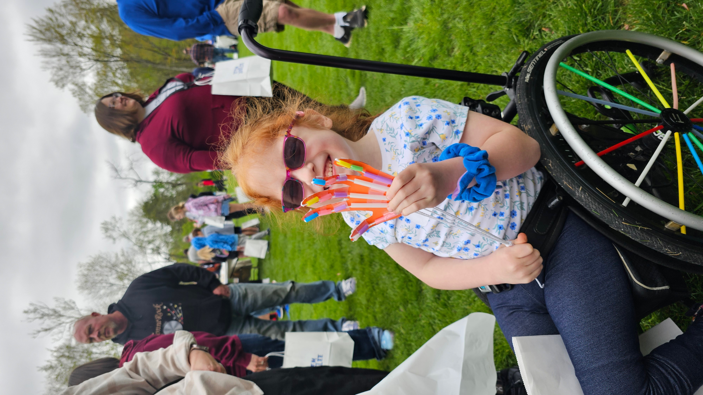

The first Jubilee

On April 26, 2025, almost 500 K-8 kids came to Rose-Hulman for our first STEM Jubilee. We had more than 30 booths and around 150 Rose-Hulman students running them. It was free and busy, and it ran all morning.
The whole thing started with a few Noblitt Scholars wanting to put on a fun day of science for local kids. Makayla Johnson, Taylor Donen, and Catherine Arrandale (all biomedical engineering sophomores) led the project, with Dr. Christine Buckley, who runs the Noblitt Scholars Program, helping pull it together.
"Making STEM really fun when I was in elementary school was probably the biggest reason as to why I'm interested in it now," Makayla said. That was kind of the whole point.
What was at the booths
A lot. A few of the favorites:
- Building lightsabers with real circuits
- Slime, lava lamps, and color-changing acid/base reactions
- Bottle rockets
- Making constellations out of pretzels and marshmallows
- Looking through real telescopes at the Oakley Observatory
- Building model prosthetic hands out of straws and string
- Decoding emojis written in binary
- Bubble snakes, balloon-powered Lego cars, and harmonicas
Some kids parked at one booth for half an hour. Others sprinted around trying everything.
The kids said it best
Our favorite quote of the day came from Keeva, a kindergartener from DeVaney Elementary:
"Best. Day. Ever!"
She also said, "I learned that it's not magic! It's science!" which is honestly the perfect summary.
Evan, a first-grader from Rio Grande Elementary, spent quality time at the telescope booth. He walked away saying, "I had so much fun I don't even know what the word would be!"
Why we kept going
"It's really important to inspire the future Rose students," Taylor said. Catherine put it simpler: "It made me smile to see parents and kids having fun."
That was pretty much it. We got the turnout we hoped for, the kids had a blast, and the scholars who ran booths walked away wanting to do it bigger the next year.
In the news
Year two and beyond
Year one gave us the basics. We've been building on it since. Read the 2026 recap to see how the next one went.